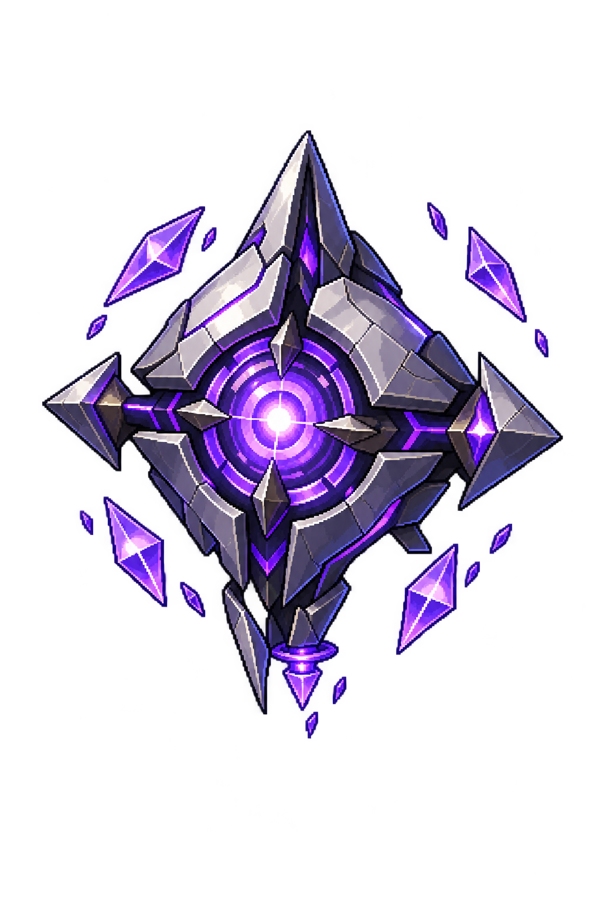

Enemy 01 · Umbra
Rift Drone

Floating angular four-point silver-violet drone with one bright purple central lens and a few isolated crystal fins; no humanoid body.
160 px battle previewCheck the silhouette and details at a smaller size.
Updated design · Awaiting your visual review